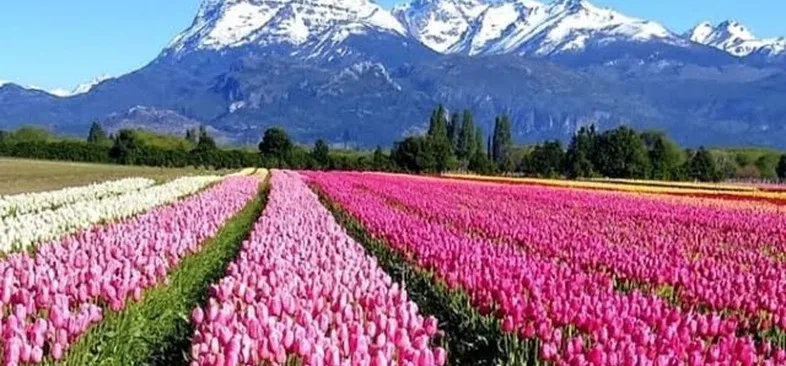
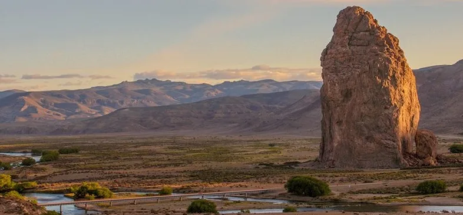
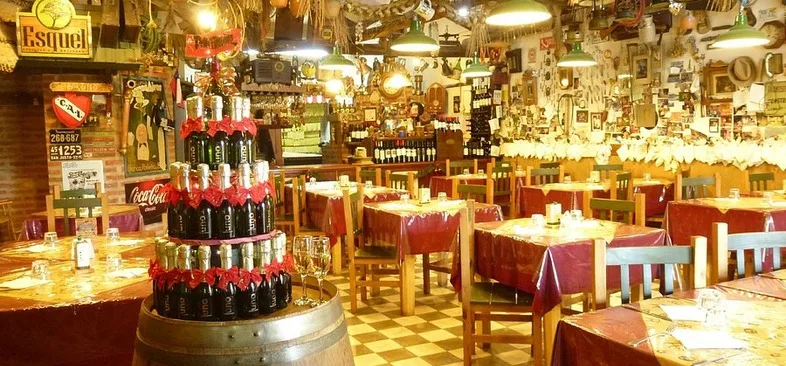

全球南方，万物起源。

埃斯克尔是楚布特安第斯山区的门户城市。宁静的小城具有浓厚的威尔士文化特色，坐落于安第斯山脚下，距洛斯阿莱塞斯国家公园70公里——该公园是巴塔哥尼亚最原始的公园之一，2017年被列为世界遗产。比巴里洛切游客更少，个性更鲜明。
12月至3月适合徒步、钓鱼和在洛斯阿莱塞斯游船观光。7月和8月可在拉霍亚滑雪。复活节是乘坐"小特罗奇塔"的最佳时机——火车增加特别班次，特雷韦林还会举办威尔士节庆活动。
阿根廷航空从布宜诺斯艾利斯出发（有时途经巴里洛切中转）。从巴里洛切乘大巴沿258号公路行驶约4小时。也可从特雷劳和科莫多罗里瓦达维亚出发。布里加迪尔·安东尼奥·帕罗迪机场距市中心约20分钟。
世界上仍在正常运营的最南端铁路。轨距仅75厘米，使用1922年的蒸汽机车。从埃斯克尔出发前往埃尔迈滕（4小时）或短途游览（2小时）。保罗·瑟鲁在《老巴塔哥尼亚快车》中使其声名大噪。旺季请提前预订。

距埃斯克尔70公里。园内保存着树龄长达2600年的古老柏松。乘船游览"祖父柏松"（高60米，树龄2200年）是不可错过的体验。富塔劳夫肯湖和梅嫩德斯湖湖水呈现令人叹为观止的蓝色。

距埃斯克尔24公里的威尔士小镇。1865年抵达楚布特的殖民者后裔至今保留着饮茶传统。纳因·马古茶馆：威尔士蛋糕、自制果酱，尽在一座历史古宅之中。

距埃斯克尔13公里的滑雪中心。比巴里洛切和拉斯莱尼亚斯人少价廉。共28条雪道，现代缆车，可俯瞰罗萨里奥湖。夏季缆车供徒步者乘坐，可欣赏全景风光。山脚海拔2100米——若尚未适应高原，第一天请放慢节奏。

花期从10月初至11月初，距特雷韦林13公里。以安第斯山为背景的五彩郁金香海洋。可漫步游览、品尝威尔士糕点、参观手工艺品市集，天气允许时还可乘坐热气球。被誉为"阿根廷的库肯霍夫"。仅在花期开放，参观前请提前确认。

距埃斯克尔125公里的自然保护区。一座高逾200米的火山穹丘矗立于楚布特河雕刻的峡谷之中。适合徒步和攀岩。火星般的奇特地貌，鲜有旅游攻略提及。

距市中心4公里的城市自然保护区。小径与观景台可俯瞰城市全景和纳韦尔潘山脊。是快速放松或欣赏日落的理想去处，无需离开埃斯克尔。
